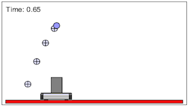

This simulation illustrates basic concepts behind reference frames, and how they pertain to Newton's First Law. The animation depicts a cart with a ball launcher. In the first animation, the cart is stationary. In the second and third animations, the cart is moving in the x-direction. Students will study how these reference frames are different, and how they are the same.